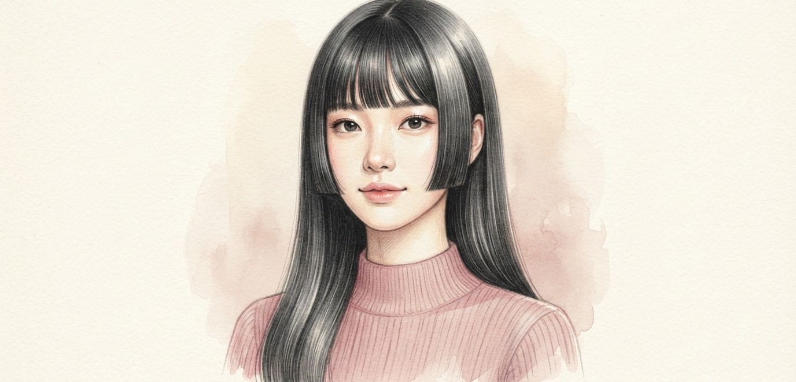
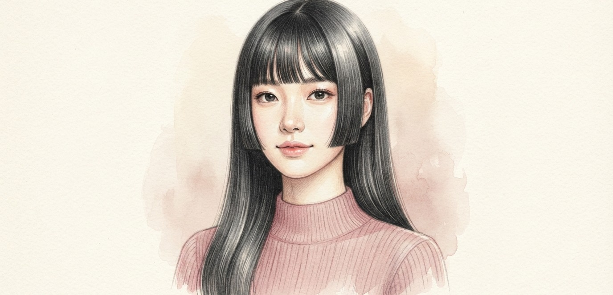
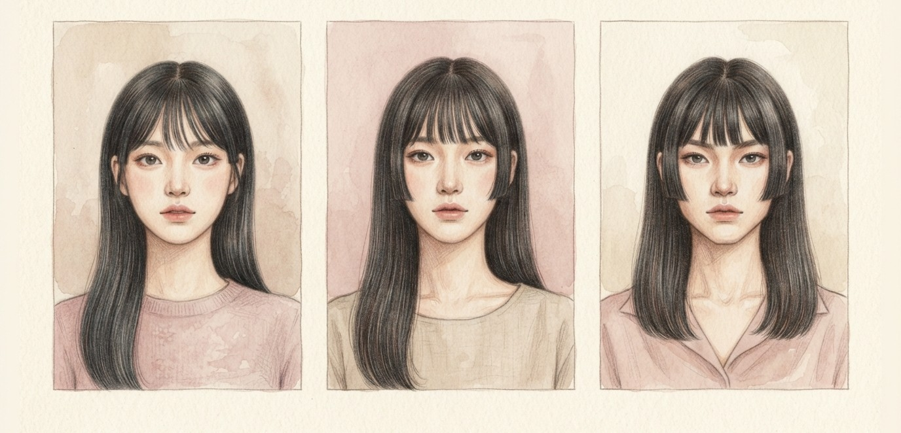
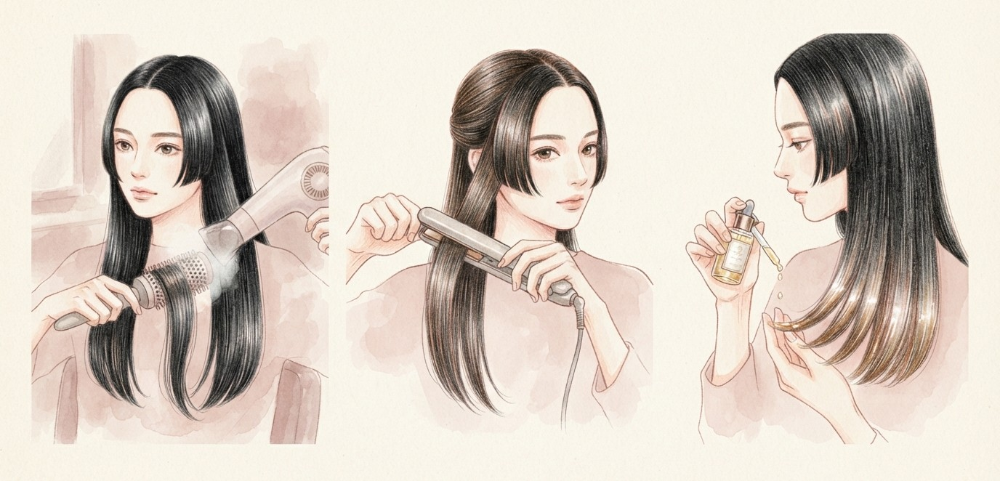
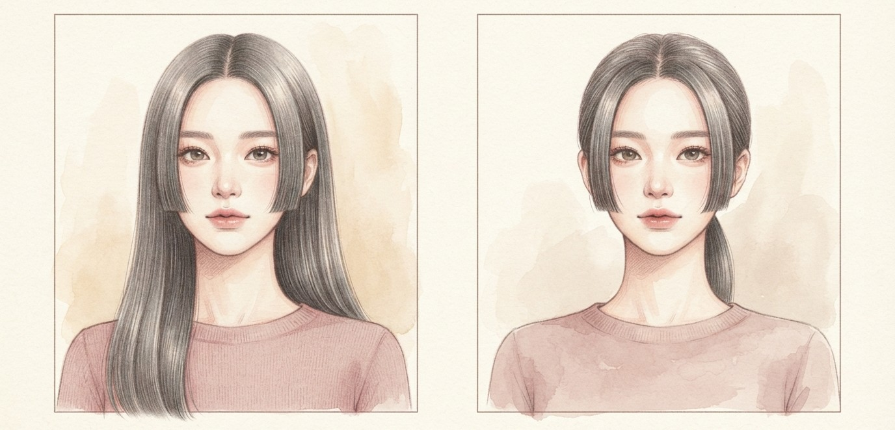

일본 전통 머리에서 유래했지만, 프랑스 ‘보그’는 K-팝 가수들의 대표 스타일로 소개했어요. 헝클어진 파리지앵 헤어 다음은 이거예요.

옆머리가 얼굴 여백을 가려 균형을 맞추고 이목구비를 또렷하게 보여줘요.
둥근 얼굴이나 각진 턱이라면 옆머리 길이를 조절해 답답함을 덜어요.
모질은 생머리나 살짝 곱슬기 있는 모발이 가장 연출하기 쉬워요.

둥근 빗과 드라이어로 차분하게 빗어 내리며 펴 주세요.
바쁠 땐 판 고데기로 옆머리만 잡아도 충분해요.
마무리로 모발 끝에 가벼운 헤어 오일을 살짝.

하나로 깔끔하게 묶거나 뒤로 넘기면 짧은 옆머리만 남아 단발처럼 보여요. 머리 하나로 두 가지 스타일이 돼요.
히메 커트는 몇 mm 차이로도 균형이 달라져요.
집에서 혼자 자르지 말고 꼭 미용실에서 다듬으세요.
저장해두고 쇼핑할 때 꺼내보세요